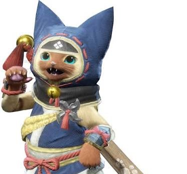
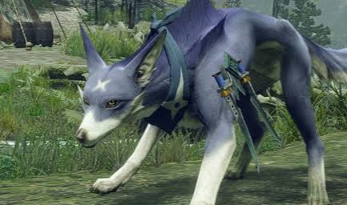
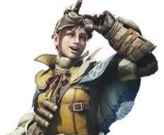

PERSONAJES DE LA SAGA
En Monster Hunter, los NPC tienen una función muy importante dentro de la aventura. No solo sirven como guías o apoyo para el cazador, sino que también ayudan a dar vida al mundo, a crear la sensación de comunidad y a reforzar la historia de cada entrega. Gracias a ellos, la experiencia del jugador se siente más inmersiva y más cercana.

LOS CMARADAS FELYNE
Los camaradas felinos, conocidos como Felynes, son quizá los personajes más queridos de la saga.
Son aliados muy útiles que acompañan al cazador, le ayudan en el campamento, le apoyan en las misiones y
aportan ese toque entrañable que hace que el mundo de Monster Hunter se sienta más vivo.
En Monster Hunter Rise destacan especialmente por su papel activo y por la cercanía que tienen con el jugador.
También aparecen en varias entregas de Stories, donde su presencia refuerza la relación entre el cazador y su aventura.

LOS CAMRADAS CANYNE
Los Canyne son compañeros caninos que aparecen en Monster Hunter Rise.
Ayudan al cazador durante las misiones y permiten desplazarse rápidamente por el
terreno mientras se puede recuperar resistencia o afilar el arma. También pueden participar en los combates,
por lo que son aliados útiles tanto para explorar como para cazar.

LA ENCARGADA DE MOSNTER HUNTER WORLD
La encargada del cuartel en Monster Hunter World cumple una función esencial como apoyo del cazador.
Se encarga de ofrecer información, coordinar objetivos y ayudar a preparar cada expedición.
Es una figura clave porque combina el papel de guía y de enlace entre el mundo del juego y el jugador,
haciendo que cada misión se sienta más organizada y más emocionante.

LAS GEMELAS DE KAMURA
Las gemelas de Kamura, Hinoa y Minoto; son un ejemplo de cómo los personajes secundarios pueden aportar
personalidad al mundo de Monster Hunter. Su presencia ayuda a crear un entorno más completo y más interesante,
mostrando que la saga no se basa solo en la caza, sino también en las relaciones, la comunidad y el papel de cada
personaje dentro de la historia.